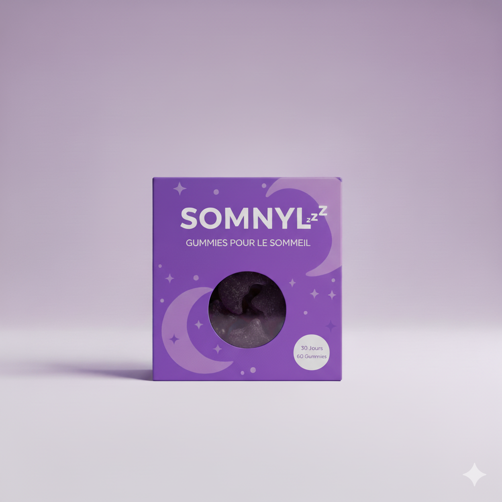

FR
S'identifier
Le secret d’un sommeil profond et naturel 🌙

29,99 €
Sérénité, relaxation et sommeil réparateur
Formulées à base d’extraits de plantes et de mélatonine, les gélules Somnyl vous aident à retrouver un rythme naturel de sommeil. Une solution douce et efficace pour ceux qui souhaitent améliorer la qualité de leur repos sans accoutumance.
Somnyl favorise un endormissement naturel et rapide.
Réduit les réveils nocturnes pour un sommeil plus continu.
Composée d’ingrédients issus de plantes et vitamines essentielles.
Prendre 1 gélule 30 minutes avant le coucher, accompagnée d’un verre d’eau. Conserver dans un endroit sec à température ambiante.